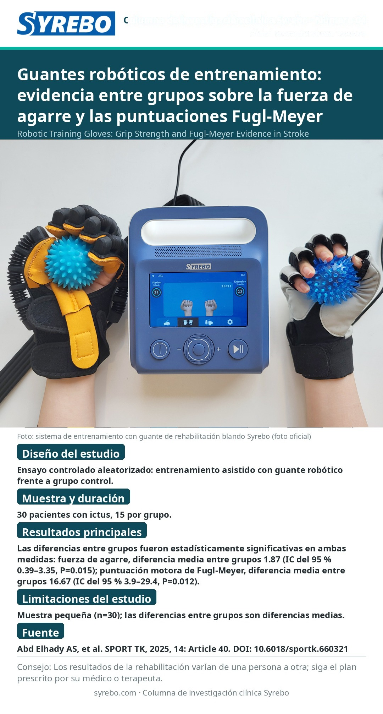

Guantes robóticos de entrenamiento: evidencia entre grupos sobre la fuerza de agarre y las puntuaciones Fugl-Meyer

Fuente: Abd Elhady AS, Ahmed GM, Hassan A, Ibrahim SM, Abdelmageed SM. Efficacy of robotic training gloves in improving hand function and movement in stroke patients. SPORT TK-EuroAmerican Journal of Sport Sciences, 2025, 14, Article 40. DOI: 10.6018/sportk.660321.
Límites del estudio: Muestra pequeña (n=30); las diferencias entre grupos son diferencias medias.
Recordatorio amistoso: Los resultados de la rehabilitación varían de una persona a otra; elabore su programa de entrenamiento bajo la supervisión de un médico o terapeuta.